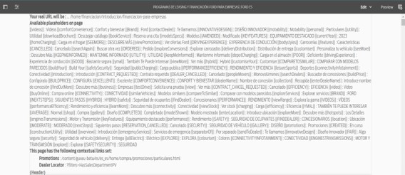
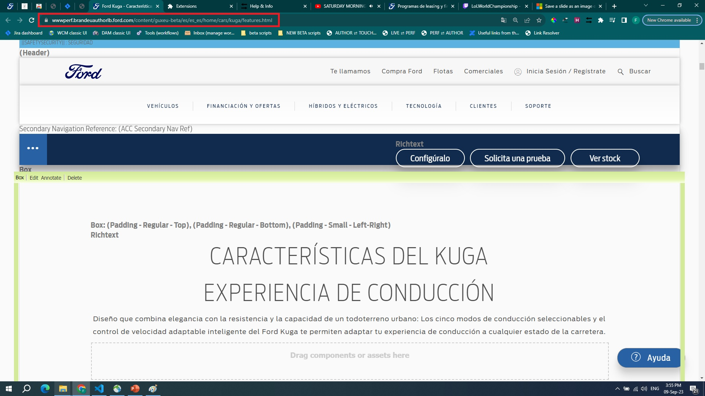

Requires this component in order to go from the editing of BETA pages to perf/live. Sometimes this component fails to load and you will have to reload the page.
But also, DSE pages don't have this component, hence the jump from editing to perf/live on beta markets for these page WILL NOT WORK. Still works for non-beta DSE pages.
Sometimes it may look like you are in the Classic UI, but you technically are not. When you open links from the worfklow, it opens the editor, but the URL is missing "CF#" part. So the program gets confused and doesn't recognize that you are in Classic mode.
Enjoy and contact Farid Mammadbayov for extra info.
Also check out my other extension that creates workflows for you automatically straight from the JIRA ticket page.